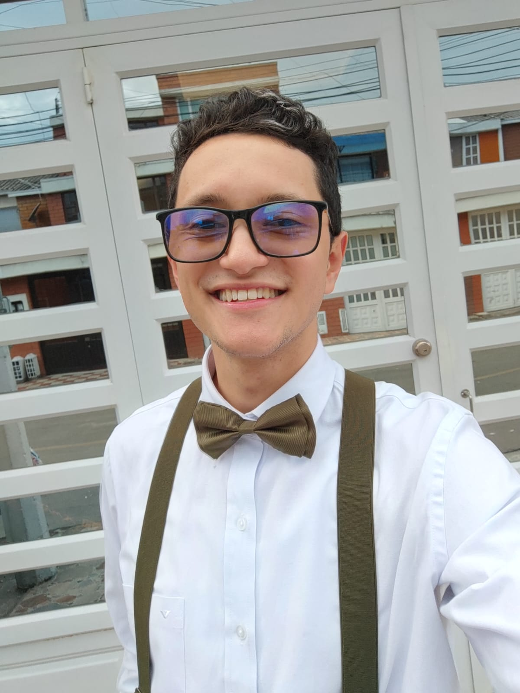

Datos Personales
Nombres: Julian Felipe
Apellidos: Avila Santa
Fecha de Nacimiento: 07 de noviembre de 2000
Lugar de Nacimiento: Bogotá D.C, Colombia
Información Personal
Perfil
Soy un analista y desarrollador de sistemas de información que estudió en el Servicio Nacional de Aprendizaje SENA. Poseo conocimientos en diversas tecnologías y herramientas como Git, Java, Spring Boot, HTML, CSS, JavaScript, SQL, Docker, Azure DevOps, entre otras. Me destaco en el levantamiento de requerimientos, soporte de aplicaciones y desarrollo de aplicaciones web. Soy un apasionado por el aprendizaje autodidacta y tengo una alta capacidad de trabajo en equipo. Mi objetivo es brindar soluciones tecnológicas de alta calidad y me caracterizo por ser creativo, dinámico, servicial, proactivo, honesto, respetuoso y responsable. Siempre en búsqueda de desarrollarme profesionalmente.
Idiomas:
- Español
- Inglés